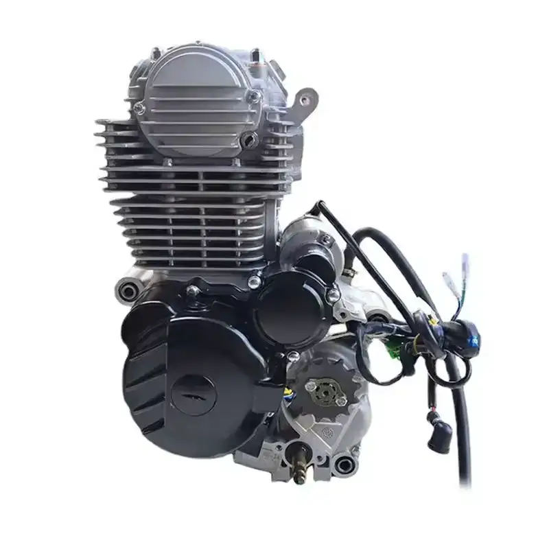

Productos principales para Latinoamérica
Motor CG para Motocicleta
Motores CG 125cc-250cc con diseño resistente, mantenimiento fácil y repuestos disponibles para mercados de Latinoamérica.

Motor CB para Motocicleta
Motores CB 150cc-250cc para motos de calle, trabajo y off-road según configuración.